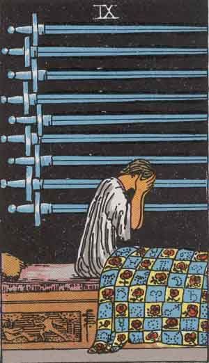

Nine of Swords
Positive
Anxiety, Worry, Distress
- Treat generalizations as hypotheses and work thru them rather than being ruled by them.
- How much do you tell yourself that you don't tell others?
- Are you dwelling on worst-case scenarios? Have you considered best-case?
- Be careful of manifesting your fears by dwelling on them.
- You do not need to see all the solutions or have all the answers before you act.
- When struggling to see your situation clearly, if you are plagued by negative thoughts, find an objective third party and share.

Negative
Mindfulness, Conscious Choices
- Be aware of your negative thoughts. Everything will ultimately be okay.
- Use calm patience to address anxiety. Separate YOU from YOUR thoughts.
- Are you getting worked up by how something appears? You may be causing your self harm. Analyze and ask how things really are, share your thoughts with somebody. It may help you sort them out.
- Are any of your fears warranted? Are you being too hard on yourself? Quit any negative self-talk!
- Are things really that bad? Stop having imaginary conversations!
You do not need a destination to pick a direction.
Do not wait until conditions are perfect to begin. Beginning makes conditions perfect.
Out of clutter, find simplicity. From discord, find harmony. In the middle of difficulty lies opportunity.